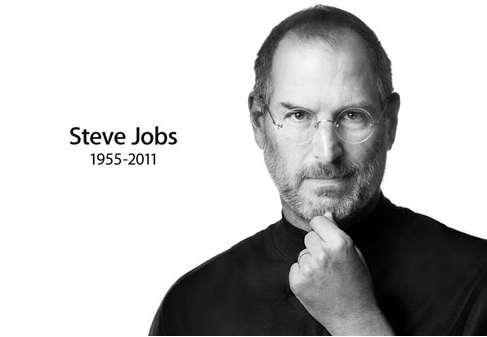

|  | Стів Джобс |
Сті́вен Пол Джобс — американський підприємець і винахідник. Був засновником, членом ради директорів і CEO корпорації Apple Inc.. Джобс також раніше займав посаду CEO компанії Pixar Animation Studios; в 2006 році The Walt Disney Company придбав Pixar і Джобс став членом ради директорів Disney. У 1995 році в мультфільмі «Історія іграшок» він був зазначений як виконавчий продюсер. Наприкінці 1970-х Джобс зі співзасновником компанії Apple Стівом Возняком створили один з перших комерційно успішних персональних комп'ютерів. На початку 1980-х Джобс був одним з перших, хто побачив потенціал керованого мишкою графічного інтерфейсу користувача, що призвело до створення Macintosh. 1986 року Стів купив у Lucasfilm студію комп'ютерної графіки The Graphics Group, пізніше перейменовану в «Pixar». Він був її генеральним директором і основним акціонером до придбання її «Уолтом Діснеєм» 2006 року. До кінця свого життя Джобс був акціонером та членом ради директорів «The Walt Disney Company». Після його смерті, 24 жовтня 2011 року вийшла його біографія «Стів Джобс».
Шкільні заняття розчарували Стіва своїм формалізмом. Викладачі початкової школи Мона-Лома характеризували його як пустуна, і тільки одна вчителька, місіс Хілл, змогла побачити в своєму учневі неабиякі здібності і знайти до нього підхід. Коли Стів навчався в четвертому класі, місіс Хілл давала йому за гарне навчання «хабара», у вигляді солодощів, грошей і наборів «зроби сам», тим самим стимулюючи його навчання. Це швидко принесло плоди: незабаром Стів почав старанно вчитися без всякого підкріплення, а в кінці навчального року настільки блискуче склав іспити, що директор запропонував перевести його з четвертого класу відразу в сьомий. В результаті за рішенням батьків Стів був зарахований до шостого класу, тобто в середню школу. Це була школа в Кріттенден, в декількох кварталах від Мона-Лома, але зовсім в іншому, кримінальному районі. І на вулиці, і в самій школі хулігани не давали Джобсу проходу. Через рік Стів поставив перед батьками ультиматум про переведення в іншу школу. Родині довелося на останні заощадження купити будинок в більш пристойному районі, в південному Лос-Альтос Надалі Джобс вчився в середній школі і в старшій школі Хоумстед в Купертіно. Після переїзду сім'ї батько влаштувався на роботу механіком в сусіднє містечко Санта-Клара в самому центрі майбутньої Кремнієвої долини, в компанію Spectra-Physics, що виробляла лазери. вийшла його біографія «Стів Джобс».
Цитати |
Зображення в літературі та кіно |
|
HTML ⭐ ⭐ ⭐ ⭐ CSS(3) ⭐ ⭐ ⭐ ⭐ JavaScript ⭐ ⭐ ⭐ ⭐ C# ⭐ ⭐ ⭐ Python ⭐ ⭐ ⭐ ⭐ |
C++ ⭐ ⭐ ⭐ Photoghraphy ⭐ ⭐ ⭐ ⭐ Painting ⭐ ⭐ Marketing ⭐ ⭐ ⭐ ⭐ ⭐ Public speaking ⭐ ⭐ ⭐ ⭐ ⭐ |